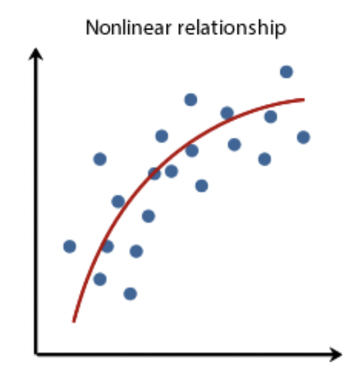
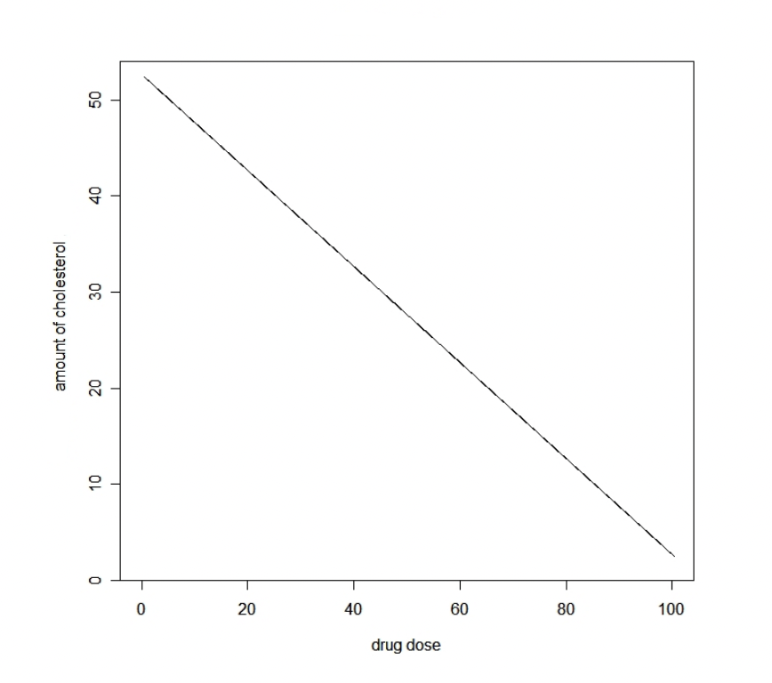
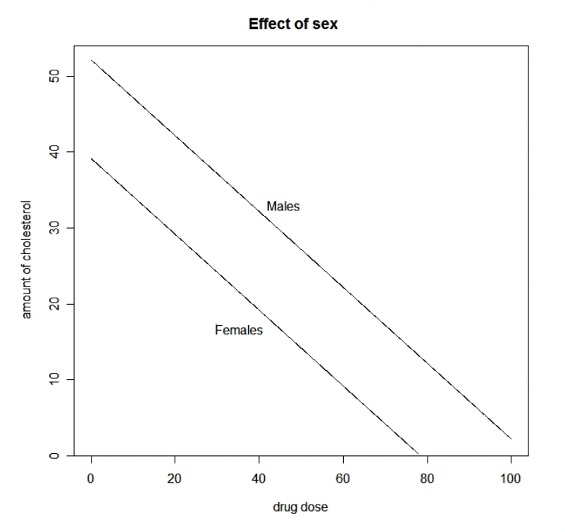
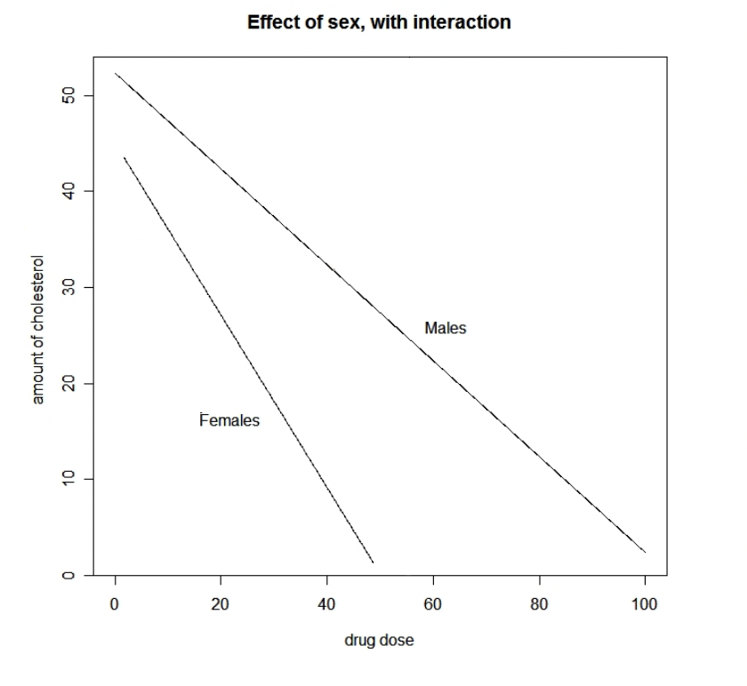
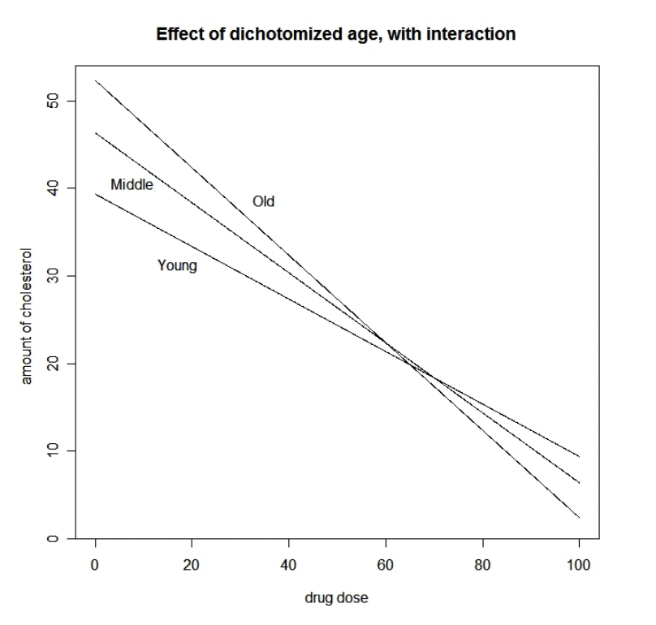
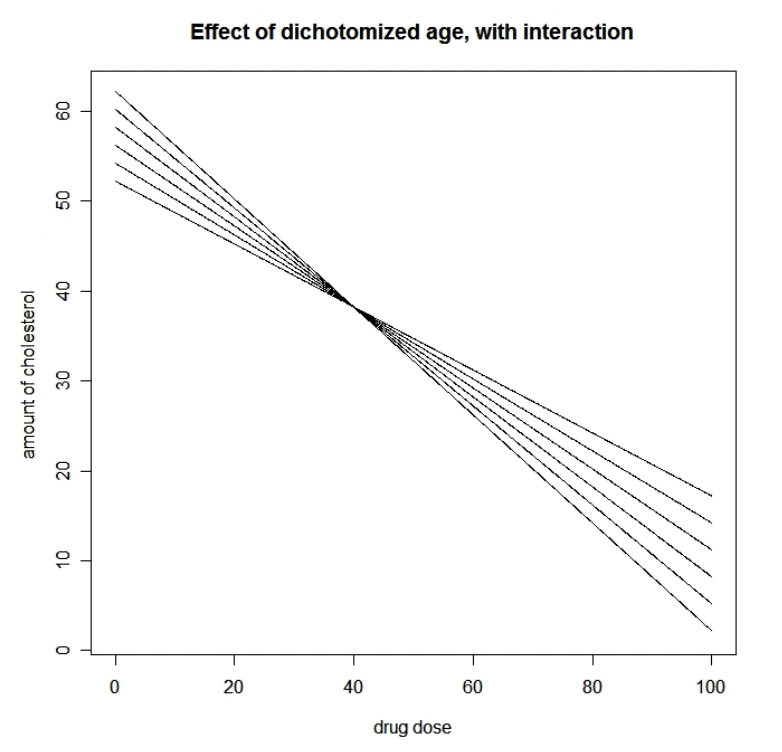

Chapter 14 - Non-Linear Models
Contents
# Run this first so it's ready by the time you need it
install.packages("supernova")
install.packages("ggformula")
library(supernova)
library(ggformula)
Chapter 14 - Non-Linear Models#
In all the modeling we’ve done so far, we’ve relied on the general linear model to combine the effects of predictors in order to make a guess about the value of an outcome. This linear keyword means we have combined them with addition in the model equation. It implies that we think each predictor can contribute to explaining variance regardless of the value of any other predictor.
However, this isn’t always how the data generation process actually works. Not everything in the world is combined linearly. Gravity, a very simple deterministic model, has mass and distance integrated in multiplicative ways. If we think a data generation process in psychology is not linear, is that a fatal flaw in using the general linear model framework?
It turns out that the answer is no! The general linear model always combines things linearly. But we can use some tricks of math to turn nonlinear relationships into linear ones. In this chapter we’ll learn how to do this.
14.1 Nonlinear relationships#
First let’s conceptualize what it means for a data generation process to be nonlinear. We’ll think of this in the context of number of hours of study predicting someone’s grade on a test.
In this case, the separate components of the model are easy to identify - number of hours of study is the sole explanatory variable, and test grade is the outcome variable. If we were to fit a regression model on this data, we’d interpret the studying coefficient to mean the expected change in grade for every additional hour of study. In other words, we’d expect every additional hour of studying to result in the same change in grade. The difference in grade between 2 and 3 hours of study should be the same as between 12 and 13 hours of study. This sort of relationship would look like the plot below.

However, this sort of relationship doesn’t necessarily make sense. Due to our experience with studying, we know there are diminishing returns involved - studying a bit helps a lot more than not studying at all, but the different between a lot of studying and an extreme amount of studying probably doesn’t help our grade that much more. This sort of situation would look like the plot below instead.
That curve in the graph is an example of a nonlinear relationship. It’s where the effect of an explanatory variable depends on the value of the explanatory variable.
14.2 Variable transformations#
We can incorporate this sort of relationship into our models by looking to how algebra handles this. Consider the basic equation for a straight line, y = x. This means for every one point increase in x, there is a one point increase in y, like in the graph below.
Now consider the polynomial equation, y = x^2. This means that for every one point increase in x, you square the value of y. That kind of relationship creates a graph like the one below.
In other words, the increase in Y between each level of x gets larger as x gets larger. The difference in Y between X=0 and X=1 is not very big, but the difference in Y between X=3 and X=4 is much bigger. By transforming the value of X into one that is squared, we can model this kind of increasingly stronger relationship.
In our data, then, if we have reason to believe that the change in predicted Y should get larger as X gets larger, we can use a polynomial form of the predictor X to model it. Note that this is not the same thing as saying that Y itself gets larger as X gets larger - that is true in a simple linear regression. This is saying that the magnitude of how much Y increases gets larger as X gets larger. By squaring the raw values of X to make a new variable X-squared, we can put that back into the context of the linear model, where the coefficient now means for every one-unit increase in X-squared, there is an expected increase in Y.
Let’s see how this plays out in some simulated data where we know what the true relationship is. First, we’ll randomly draw some predictor values from the normal distribution, and also add some normally-distributed measurement error to the mix.
set.seed(10)
predictor <- abs(rnorm(100, 0, 2))
error <- rnorm(100, 0, 1)
Next, we’ll create an outcome variable that is a product of the predictor and measurement error. Specifically, it is a product of the square of the predictor:
outcome <- 2*predictor^2 + error
Let’s see what would happen if we tried to model these with a simple linear model, outcome ~ predictor. Below is some code creating a dataframe, model, and a scatter plot with these values. Add a line with supernova() to measure how well we do with this model in predicting the outcome variable.
sim_data <- data.frame(predictor, outcome)
linear_model <- lm(outcome ~ predictor, data = sim_data)
gf_point(outcome ~ predictor, data = sim_data) %>% gf_lm()
#Use supernova() to tell us how good this model is
That’s really good actually! A PRE of 0.89 is better than we almost ever get with real data. But in this case we know the data generation process - we know we can do better. In this case, the model is systematically underpredicting for both large and small values of X and overpredicting for middle values, because it’s trying to fit the best straight line. Compare the the graph from above to one where we draw the best-fitting curved line, using gf_smooth() from ggformula:
gf_point(outcome ~ predictor, data = sim_data) %>% gf_smooth()
This implies that the best relationship between predictor and outcome is not linear, but exponential - the slope of the line is getting steepr as predictor gets larger. Which is true, that’s how we computed outcome in our simulation! So, in order to force this relationship back to being linear and able to be modeled, let’s compute a squared version of predictor:
#Square the values of predictor to make a new variable, predictor_squared
sim_data$predictor_squared <- #YOUR CODE HERE
Now model that relationship, plot it, and investigate the model performance:
squared_model <- lm(outcome ~ predictor_squared, data = sim_data)
gf_point(outcome ~ predictor_squared, data = sim_data) %>% gf_lm()
supernova(squared_model)
That is an even better PRE score. We improved our prediction accuracy because our model structure is closer to what the true data generation process is.
That’s what data might look like under an exponential relationship. Now let’s look at how we might model the case described above, where there are diminishing increases in Y as X gets larger:
sim_data$outcome2 <- 85 + 4*log(sim_data$predictor) + error
Now, outcome is a product of the log of predictor instead. If we model that and plot it assuming a linear relationship:
linear2_model <- lm(outcome2 ~ predictor, data = sim_data)
gf_point(outcome2 ~ predictor, data = sim_data) %>% gf_lm()
supernova(linear2_model)
Our PRE score is good, but not as good as it can be. We’re making especially bad predictions for small values of X (large residuals), and it looks like there should be a curved line where changes in predicted Y are smaller, the bigger X gets:
gf_point(outcome2 ~ predictor, data = sim_data) %>% gf_smooth()
So, let’s transform predictor using the log() function:
#Take the log of predictor to make a new variable, predictor_log
sim_data$predictor_log <- #YOUR CODE HERE
log_model <- lm(outcome2 ~ predictor_log, data = sim_data)
gf_point(outcome2 ~ predictor_log, data = sim_data) %>% gf_lm()
supernova(squared_model)
Again, we’ve gotten a much better PRE score this way because we’ve modeled the data generation process more accurately.
14.3 Specifying and interpreting nonlinear models#
When specifying the equation form of these nonlinear models, we want to write them in such a way that we see what data transformations were done. So, if we were to write the equation for study time and test grades being related via a log transform, we would write it as such:
This makes it clear that we are making predictions about test grades not using the raw values of study time, but the log transform of study time. In the DATA = MODEL + ERROR framework, the MODEL portion of the equation would be b1log(Xi).
When fitting this model with lm(), we can do one of two things. First, we can create a new variable like we just did previously, saving the transformed values to a new column in a data frame. Then we would use this new variable in the formula for a simple regression:
sim_data$predictor_log <- log(sim_data$predictor)
lm(outcome2 ~ predictor_log, data = sim_data)
This has the advantage of keeping the transformed values around for you to inspect. Alternatively, you can do the transformation directly in the formula of the model call:
lm(outcome2 ~ log(predictor), data = sim_data)
Interpreting the coefficients in these models can be tricky, however. It’s important to keep in mind that this coefficient refers to the transformed version of the predictor, and not the raw version. The more transformation we do to a variable, the farther away we get from the original units and the less sense it makes for the real world.
In the example above, we found that b1 = 3.925. In natural language, this would mean for every one-unit increase in the log of predictor, we’d expect a change in outcome of 3.925. This is the only way to talk about a consistent effect of predictor on outcome regardless of its specific value, so this is the way you should report it when writing about model results. But it’s hard to conceptualize what that means, because we don’t think in terms of logs.
For your own understanding of the consequences of the model, it can be helpful to solve the equation for a few different values of predictor that you might care about and see what the predicted Y is. E.g., what’s the predicted test grade for someone who studies for 6 minutes, 1 hour, or 3 hours?
So in the case of a nonlinear model, you should write your interpretations of coefficients in terms of the transformed variable (“a predicted change in test grade of 3.925 points for every one-unit increase in log of study time”), but solve this equation a couple times to know for yourself what that really means.
Note that you have to be careful about interpreting the intercept as well. This is the expected outcome value when the log of the predictor variable is 0, NOT when the raw score of the predictor variable is 0. I.e., it is when the transformed variable equals 0. For a log to be equal to 0, the raw score actually needs to equal 1 (as in the second equation above). What is the log of a raw score of 0?
log(0)
Oops, looks like we can’t even calculate that! Transformed variables can do weird things for extreme raw values, making predictions unstable.
To make things even more complicated, technically it’s possible to include transformed variables in multivariable models. You can fit as many parameters as you want, with any transformation of those variables as you want - R will do what you tell it to do so long as you use the correct syntax.
But again, making models more complex has tradeoffs. It might help you get to a better prediction within a specific sample, but could result in overfitting such that your model performs very poorly on new samples of data.
14.4 When to use nonlinear models#
Model specifications that you use in research should come primarily from existing theories or hypotheses about the data generation process. Thus, you should use nonlinear models when you suspect that variables are related to eachother in a nonlinear way.
However, it is actually rare to encounter nonlinear models in psychology. We usually don’t understand the data generation process well enough to expect anything more specific than “as X goes up, Y goes up too.” Additionally, there is often so much error in our measurements that it’s hard to see whether a linear or nonlinear line would fit the data better. Because of this, most people default to using linear models. Yet, there can be clues that point you towards using nonlinear alternatives.
Remember back in chapter 10 how we briefly talked about the shape of the error distribution? If the error distribution is roughly normal, our model is in general unbiased. It may be making errors when predicting outcome values for certain data points, even large errors. But if there isn’t any systematic pattern in those errors, then the model is likely to make unbiased estimates averaged across many predictions.
If the error distribution is skewed, however, our model is going to have problems. This means our model is biased - more often it makes a prediction that is too high or too low. Let’s see what the error distribution looks like for the case where we build a simple linear model when the true data generation process is an exponential relationship:
sim_data$linear_resid <- resid(linear_model)
gf_histogram( ~ linear_resid, data = sim_data)
This definitely looks skewed, and suggests the model is usually making predictions that are too high (more residuals in the negative body of the distribution to balance out the extreme residuals in the positive tail).
Another way of investigating this is to make a scatter plot of the residuals, against what the predicted values are. If we’re modeling the data generation process in an unbiased way, this scatterplot should look like a random cloud of data points. There shouldn’t be any relationship between the value of what the model predicts, and how far off that prediction is from the actual values:
sim_data$squared_predicted <- predict(squared_model)
sim_data$squared_resid <- resid(squared_model)
gf_point(squared_resid ~ squared_predicted, data = sim_data)
Based on this plot, it looks like there’s no systematic problems with our model. There’s still error in the model (the residuals are non-zero), but these residuals are randomly distributed for each value of the predicted score.
Compare that to the predictions and residuals from the linear, misspecified model:
sim_data$linear_predicted <- predict(linear_model)
sim_data$linear_resid <- resid(linear_model)
gf_point(linear_resid ~ linear_predicted, data = sim_data)
Clearly there’s some structure to this plot. Predicted values at the extremes of the scale are likely to be under-predictions (positive residuals), and values in the middle of the scale are likely to be over-predictions (negative residuals).
If you see structure like this in a predicted-by-residual plot, that tells you there’s probably a nonlinear relationship between the predictor variable and the outcome variable. It is then your job to figure out what kind of nonlinear relationship it might be.
14.5 Non-parametric models#
It’s rare to know enough about the data generation process to hypothesize a nonlinear relationship between predictors and an outcome. Nonlinear models make a fairly stringent assumption about the exact relationship between variables.
In fact, even linear models make a somewhat stringent assumption. They assume that the best fitting line is straight - that for every one-unit increase in the predictor, and any one-unit increase in the predictor, there is a reliable change in the outcome.
Sometimes we’re not even ready to make a hypothesis that strong. We may not know if the effect of the predictor should be the same for every value of the predictor. Maybe we even suspect that it’s not, but we have no inclination what type of nonlinear pattern would better characterize the relationship.
In that case, we can use non-parametric models. These models remove the real-world units from each variable, and represent values instead in terms of their ranks relative to the rest of the variable. The table below shows an example of a variable holding people’s thumb lengths in millimeters, and the corresponding ranks of those values:
Thumb length (mm) |
Thumb length (rank) |
|---|---|
68 |
6 |
63 |
4 |
60 |
2 |
61 |
3 |
64 |
5 |
56 |
1 |
When we do this, we lose the ability to make predictions about a particular magnitude of change in a predictor variable leading to a particular magnitude of change in the outcome variable. We no longer know how different rank 3 is from rank 4 in terms of the variable’s units. These models are called non-parametric because we’re losing the ability to estimate specific parameters in the population.
However, we gain the ability to model any sort of relationship between the predictor and outcome that might exist, so long as that relationship is monotonic (whatever sort of line best fits the data, it is always going only up or only down). The results of these models let us make a more general conclusion than any specific relationship between predictors and an outcome. They let us say, and only say, “as X goes up, Y is predicted to go up (or down)”.
To use a non-parametric model, we first have to convert all relevant variables into their ranks. To do this in R, use the rank() function. rank() has a few important arguments:
the first argument is a vector of data to convert to ranks
na.last=tells the function how to handle NA values. Usena.last=TRUE(the default) if you want NAs to receive the last rank,na.last=FALSEif they should receive rank 1,na.last=NAif you want to remove these datapoints entirely from the vector, orna.last="keep"if you want them to stay in the vector but keep the value NA. This should be the option you use if you want to preserve the same shape of the vector.ties.method=tells the function what to do in the case of data points with the same value.ties.method="first"gives the first tied value found in the vector a lower rank than later found values;ties.method="last"will do the opposite.ties.method="random"puts tied values in random order whereas the default,ties.method="average", replaces them by their mean.ties.method="max"andties.method="min"replaces them by their maximum and minimum rank, respectively.
Here is how we can convert predictor and outcome from above into ranks in order to model their relationship without knowing whether or not that relationship is linear or nonlinear:
sim_data$predictor_rank <- rank(sim_data$predictor, na.last="keep", ties.method="average")
sim_data$outcome_rank <- rank(sim_data$outcome, na.last="keep", ties.method="average")
gf_point(outcome_rank ~ predictor_rank, data = sim_data) %>% gf_lm()
14.6 Predictor interactions#
Another way the effect of a predictor can vary depending on its value is in the case of interactions between predictors.
Suppose that there is a cholesterol lowering drug that is tested through a clinical trial. Suppose we are expecting a linear dose-response over a given range of drug dose, so that the picture looks like this:
This is a standard simple linear model. Now, however, suppose that we expect men to respond at an overall higher level compared to women. There are various ways that this can happen. For example, if the difference in response between women and men is constant throughout the range of drug doses (i.e., an effect of sex regardless of the effect of dose), we would expect a graph like this:
This is the situation we have worked with before. Another name for this is that there is a main effect of sex and a main effect of drug dose. A main effect means the effect is present no matter the value of the other variable.
However, maybe men actually have a steeper dose-response curve compared to women, like this:
On the other hand, if men have a less steep dose-response curve compared to women, we would expect a picture like this:
Of these four graphs, the first indicates no difference between men and women. The second illustrates that there is a difference, but since it is constant, there are only main effects of drug dose and mex. The third and fourth graphs represent situations with an interaction. An interaction is when the effect of a variable for predicting values of the outcome variable depends on values of another variable. In this case, the change in predicted cholesterol for every one-unit increase of the drug dose depends on whether it is given to men or women.
In terms of regression equations, we have:
No effect of sex:
where Y represents the outcome (amount of cholesterol lowering), b0 is the expected cholesterol lowering when dose = 0, and b1 is the difference in expected cholesterol lowering for every one-unit increase in drug dose.
Sex has an effect, but no interaction:
where Y represents the outcome (amount of cholesterol lowering), b0 is the expected cholesterol lowering when dose = 0 and sex = 0 (in the reference group), b1 is the difference in expected cholesterol lowering for every one-unit increase in drug dose regardless of sex, and b2 is the change in expected cholesterol lowering between men and women regardless of dose. By adding the dose and sex components independently in this equation, we are hypothesizing that the effect of dose (slope) is the same regardless of sex, and vice versa.
To write an equation for the situation with an interaction, we need to add a component to the equation that will change value depending on both the value of dose and sex, for each data point.
Sex has an effect, with an interaction:
In an interaction, it’s not possible to interpret the effect of one variable without the context of the other. It’s any situation where you might say “it depends” for making predictions. Is sun exposure related to skin cancer risk? It depends on if you’re wearing sunscreen or not. Does adding more mustard make food more tasty? It depends on if that food is a hot dog or ice cream (or maybe not - you do you.)
Because of this dependence between the variables now, interpreting the coefficients gets tricky. If the equation looked specifically like:
you should interpret b0, b1, and b2 in the contexts of when the other variable is 0. Here:
b0 (the intercept) is the expected cholesterol lowering when dose = 0 and sex = 0.
b1 (the main effect of dose) is the expected change in cholesterol lowering for every one-unit increase in dose, when sex = 0 (i.e., for the reference group).
b2 (the main effect of sex) is the expected change in cholesterol lowering between males and females, when dose = 0.
Now, let’s get to b3 (the interaction coefficient). Think of this as the change in a main effect, for every one-unit increase of another variable. For our case, we could say for every one-unit increase in dose, the difference in predicted cholesterol between males and females is decreasing by 0.25 (b3 = -0.25). Or interpreted the other way, by going from females to males (females being the reference group here), we expect the difference in cholestrol between a dose of 0 and a dose of 1 to be 0.25 less.
In the pictures above, a negative interaction term means the distance between lines for levels 0 and 1 is shrinking (or flipping negative) as you move up the x-axis. A positive interaction term means the distance between lines for levels 0 and 1 is growing (or flipping positive) as you move up the x-axis. The magnitude of the interaction term describes the speed at which that is happening.
Coefficient interpretation gets really complicated for interaction models. And takes a lot of words to write out. But it’s important to practice fully writing out what you expect to happen to your predictions under different values of the explanatory variables in concrete terms, not just saying things like “negative interaction effect between dose and sex.” That statement is removed from the units and real-world meaning of the variables. When interpreting coefficients, we want to stay as close to the real units as we can so that we keep sight of how important these prediction changes are in a practical sense.
Now consider the above example, but with age and dose as independent variables. Notice that this means we have two continuous variables, rather than one continuous and one categorical variable. In the absence of an interaction term, we simply have the model:
With no interaction, interpretation of each effect is straightforward, as we just have a standard multiple linear regression model.
Even though age will be treated as a continuous variable here, suppose for an instant it was coded as dichotomous, simply representing “old” and “young” subjects. Now we would be back to the case already discussed above in detail, and the graph would look something like this:
In this hypothetical case, we see that the effects of dose on cholesterol lowering starts higher in younger compared to older subjects, but becomes lower as dose is increased. What if we now add a middle category of “middle aged” persons? The graph may now look something like this:
And if even more categories of age were added, we might get something like this:
Now imagine adding finer and finer age categories, slowly transforming the age variable from discrete (categorical) into a continuous variable. At the point where age becomes continuous, we would have an infinite number of different slopes for the effect of dose, one slope for each of the infinite possible age values. This is what we have when we have a model with two continuous variables that interact with each other.
The model we would then have would look like this:
or using example numbers for the coefficients:
This means that the effect of dose changes depending on the age of the subject, so that there is really no “unique” effect of dose. It is different for each possible age value. For someone aged 30, the simple model is:
For someone aged 60, the simple model is:
This means that the cholesterol drug has a stronger effect on people aged 60 than people aged 30.
The effect of age is similarly affected by dose. If the dose is, say, dose = 0, then the simple model of age on cholesterol lowering is:
If the dose is 20, the simple model is:
I.e., age has a bigger effect on cholesterol lowering with larger doses.
To fit an interaction model in R, either make a new transformed variable that multiplies the column of predictor 1 by the column of predictor 2, or do the multiplication directly in the formula of the model call:
#simulation for the situation above
set.seed(10)
dose <- abs(runif(100, 0, 100)) #uniformly distributed doses
age <- abs(rnorm(100, 45, 20)) #normally distributed ages
error <- rnorm(100, 0, 10)
cholesterol <- 0.5*dose + 0.02*age + 0.01*dose*age + error
cholesterol_data <- data.frame(cholesterol, dose, age)
#fitting interaction model
cholesterol_model <- lm(cholesterol ~ dose + age + dose*age, data = cholesterol_data)
cholesterol_model
The intercept is still the first coefficient, the main effects are the next two, and the interaction coefficient is the one labeled “dose:age”.
For visualizing interactions, there is a handy package called interactions with a function interact_plot().
install.packages("interactions")
library(interactions)
#plotting interaction
interact_plot(cholesterol_model, pred = dose, modx = age)
This function takes a model object, a pred = argument to denote which variable you want to see on the x-axis, and a modx = argument to denote which variable should receive different regression lines in the plot. When modx is a categorical variable, a separate line will be plotted for every level of the variable. If modx is a continuous variable, some select lines will be plotted that represent the value of +1SD on that variable, the mean, and -1SD. This allows you to look at the spread of the lines and see how an interaction effect amplifies or attenuates a main effect in the context of another variable.
You can also make this plot to include the data points:
#plotting interaction with datapoints
interact_plot(cholesterol_model, pred = dose, modx = age, plot.points = TRUE)
But this sometimes makes the graph more confusing to understand, than easier. Remember that a purpose of a graphical plot is to clearly communicate a conclusion you want the viewer to have. With simple models, adding the data points helps with that. But with complex models like interactions, it can be counterproductive. Always consider how well your message is coming across when you make visualization choices.
interact_plot() has a lot more features to help you control how it looks. To see more of those, visit this page.
14.7 Choosing the best model#
In just a few chapters, we’ve learned about so many model forms - simple group model, simple regression, multivariable models, nonlinear transformations, nonparametric, and now interaction models. It may start to feel overwhelming to know what model structure you should choose for any particular research question.
Indeed, it is not an easy task. We are trying to understand the data generation process as best we can, in terms of what explanatory variables are included and how they relate to an outcome, but human psychology is very complex and we’re almost never sure about what the best model truly is. Researchers argue over these details every day. It’s important that you understand the breadth of available models, and some are more obviously wrong than others, but choosing the absolute best one is a difficult feat.
It is important to get comfortable with not always being right, and with having opinions that are different than other people. To pick a model structure to work with, start with what you think makes the most sense given what you already know about the topic you are trying to study. Then collect some data, evaluate how right or wrong you are, and update your theories accordingly. This is how science advances.
It is important that you stake an opinion on the likely best model for each research question, or perhaps a couple candidates that you want to directly compare. What you should not do is test out every possible model you can think of to see which is the best. As we will talk about more in later chapters, practices like testing many models with the same data and picking the best one based on what that sample of data tells you is a form of overfitting, and leads to conclusions that don’t replicate in other data samples. This practice is part of what lead to the Replication Crisis in psychology.
To help keep you honest and avoid the inclination to seek out the best model for one dataset, there are some techniques you can practice. If you have an idea about what the likely best model is, you can pre-register that idea. A preregistration is when you write down, ideally somewhere public like the repository of the Open Science Framework, what you plan to do in your research and what model specification you are going to test. That way, you can’t hide from when your model is maybe not as good as you were hoping. You have to face whether or not this performance refutes your hypotheses, rather than making up a new hypothesis in light of the data and claiming you were right all along (this is a bad practice called HARKing - Hypothesizing After Results are Known).
If you don’t have a strong hypothesis yet and you’re not ready to pre-register, you can do what’s called exploratory analysis. This is when you do test out many models to see which has the best fit. But, you can’t stop there. At this point, you wouldn’t know if your best model is a good reflection of the data generation process, or just overfit for this dataset in particular. Then next step is to them do confirmatory analysis with a new, fresh set of data. That way, you can investigate if your model is robust and still has good performance no matter the data.
If your dataset is large enough, you can do both exploratory and confirmatory analysis without running a whole new study. You can split your data in half, find the best fitting model in one half, then replicate that model in the other half. If your replication is pretty similar to the original performance in the first half, you’ve successfully avoided overfitting.
What makes a dataset big enough to run an internal replication, rather than needing to collect a whole new dataset? We’ll talk more about that in chapter 18.
Chapter summary#
After reading this chapter, you should be able to:
Understand the difference between a linear and nonlinear model
Fit a nonlinear model with transformed variables
Interpret coefficients in a nonlinear model
Identify when a nonlinear model might be better, based on a predictor-by-residual plot
Explain a non-parametric model
Transform variables into their ranks
Explain an interaction model
Fit an interaction model
Interpret the coefficients in an interaction model
Plot an interaction model
Decide how you will pick a particular model structure for your research question